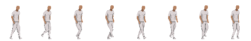

Pixel inspection
Current beat at 4×
The enlargement uses nearest-neighbor pixels. It exposes seams and disappearing parts; it does not replace the native-scale judgment.
RFC 0002 · A2 owner gate
This is the exact cargo-free carry cycle that must feel grounded, readable, and human at Realm scale. Expansion is frozen until this row passes.
Do not judge only the zoom
Pixel inspection
The enlargement uses nearest-neighbor pixels. It exposes seams and disappearing parts; it does not replace the native-scale judgment.
Whole loop
What the machine can prove
Mechanical checks narrow the review. They cannot decide whether the person feels convincing.
Open-source evidence, bounded
The pinned CC0 Mixxit walk supplied only the contact → down → pass → up vocabulary and a reproducible registration baseline. Realm copies none of its pixels, body, costume, or style.

The stop line
Compare frame 3's far passing boot with frame 7's near passing boot, then watch the frame 8 → 1 wrap. Decide whether the nearly flat foot contacts and rigid two-hand carry pose feel intentional at 1×. If any one fails, the right reference goes back to the pose source.
Paste the copied decision into this Codex task.